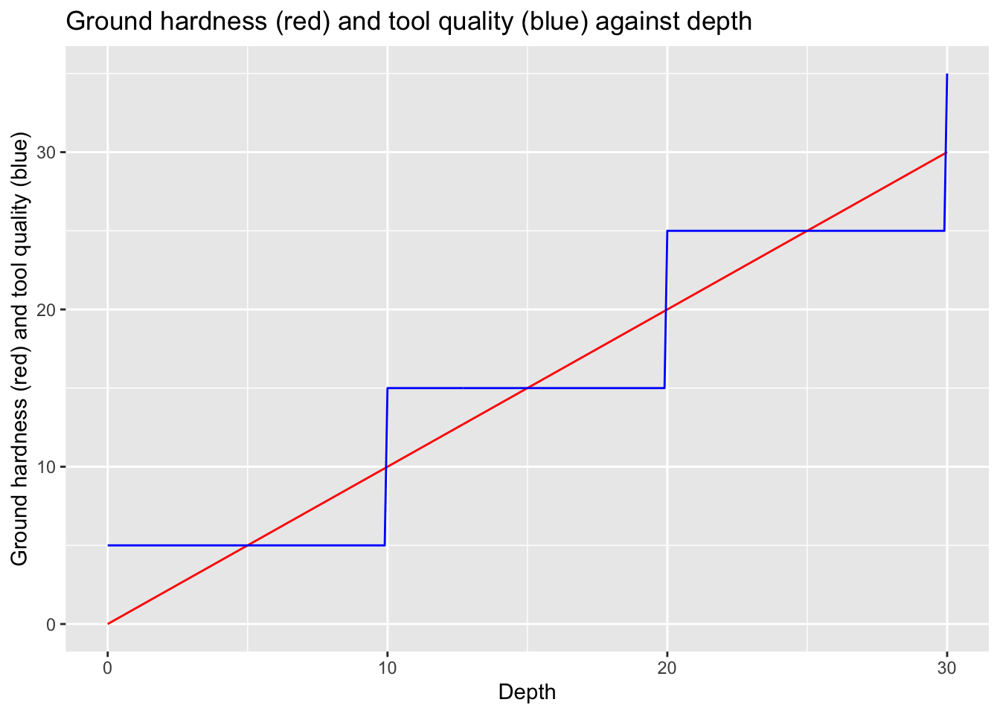
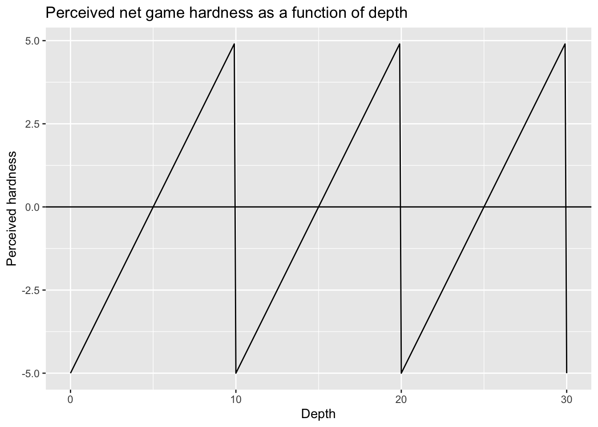
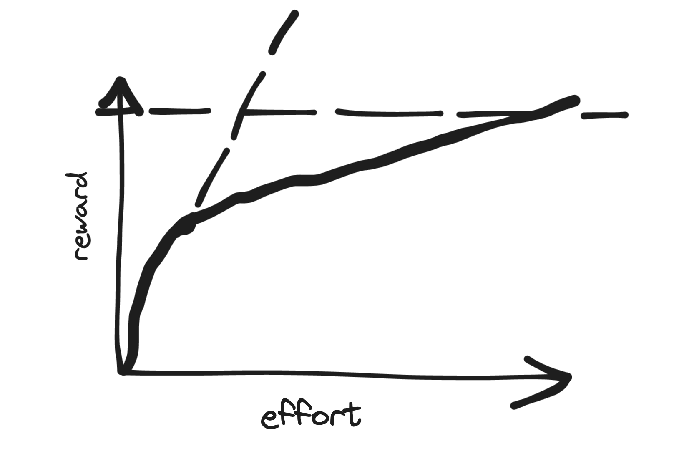

flowchart LR depth hardness gems tools money hardness -->|++| depth depth -->|++| hardness depth -->|++| gems gems -->|++| money money -->|++| tools tools -->|--| hardness

The Nintendo Switch is to the games console as the smartphone is to the personal computer. Miniturisation doesn’t deliver the same experience on a smaller scale, but a qualitatively different experience. Miniturisation, along with an always-on responsiveness, brings immediate rewards to ‘giving in’ to temptation, and so makes the appeal of failing to control oneself ever more seductive. The Switch, and the smartphone, give no cooldown period between the thought - let’s scroll or let’s play - and the action - picking up and pressing - and the behaviour: becoming as much played by as playing with an attention capture device.
And of course the software can add another arsenal in the battle for fingertips and eyeballs. An effectively designed game or app can hermatically seal the attentional vacuum, sucking time (and money) from the user-victim to the product owner, only letting them leave once they’re a sufficiently dessicated husk of their former self, by which point further attempts at resource extraction become more effortful than rewarding from the product owner’s perspective.
Recently I finished playing a Switch game called Steamworld Dig You play a steam-powered robot cowboy, who in the first few seconds inherits a pickaxe, and with this the keymapped affordance to dig. And so you do. That’s the entire plot. You dig down, and you dig across, and as you do so you’re rewarded, with precious things, that you can exchange for precious money. And you use this precious money you can buy a better pickaxe, then later - for tougher areas - a steam-powered drillbit.
And as you dig deeper, the rocks get tougher, and the stone gets tougher. But also the precious things get more precious, meaning they’re more valuable, meaning they can be sold for more, meaning you can now buy even better pickaxes and drills which make the tougher rocks and stones easier again.
And the cycle repeats itself: tougher rocks and stone so challenge gets harder, but more valuable gems so more money, and more money means better tools, so the challenge gets easier again. But then greater depth, and the rocks and stone becomes tougher again, and so the tools aren’t good enough again, but the gems get more valuable again, so the money starts rolling in faster again, and so the tools get better again, and the challenge gets easier again. Graphically, this looks something like the following:
So, this game mechanic creates a loop whereby depth both increases hardness directly, and decreases hardness indirectly through the gems-money-tools pathway. It’s the differential the effects of these two pathways that provides the sense of both challenge and progress.
In particular, it’s because the relationship between depth and hardness is broadly continuous, but the acquisition of tools which reduce net hardness is discrete and discontinuous, that the apparent difficulty, i.e. the net difference between the direct path and indirect depth-hardness paths, tends to be experienced as always increasing locally.
Let’s try to think through what this would look like.
Code
library(tidyverse)Code
alpha_0 <- 1
alpha_1 <- 1
toolStep <- 10
toolInit <- 5
depthToHardness <- function(depth) {alpha_0 * depth}
depthToMoney <- function(depth) {alpha_1 * depth}
moneyToTools <- function(money) {toolInit + toolStep * money %/% toolStep}
depth <- seq(0, 30, by = 0.1)
df <-
tibble(
depth = depth
) |>
mutate(hardness = depthToHardness(depth)) |>
mutate(money = depthToMoney(depth)) |>
mutate(tools = moneyToTools(money))
df |>
ggplot(aes(x = depth)) +
geom_line(aes(y = hardness), colour = "red") +
geom_line(aes(y = tools), colour = "blue") +
labs(
x = "Depth",
y = "Ground hardness (red) and tool quality (blue)",
title = "Ground hardness (red) and tool quality (blue) against depth"
)
So, while the red line is below the blue line, the game is perceived as ‘easy’, and while the red line is above the blue line, the game is perceived as ‘hard’, leading to a net perceived challenge schedule a follows:
Code
df |>
mutate(net_hardness = hardness - tools) |>
ggplot(aes(x = depth, y = net_hardness)) +
geom_line() +
geom_hline(yintercept = 0) +
labs(title = "Perceived net game hardness as a function of depth",
x = "Depth", y= "Perceived hardness")
Now let’s think about the locally experienced sense of challenge of this kind of game from the player’s perspective. This is in effect the first derivative of this sawtoothed line: the amount that net hardness changes per unit change in depth. Almost everywhere, except on at the moments of ‘levelling up’, this is positive, and in this example identically positive for almost the entire duration of the game.
This kind of game mechanic is dangerously seductive, because it’s easy for the player to feel that the constant experience of encountering and overcoming locally near-constant perceived challenges represents learning and mastery, and paradoxically, despite common stereotypes that gamers lack ambition and do not seek challenges, the reality can be quite the opposite: the seductive appeal of games is often that, in the course of learning to play a game, and play it well, they are learning, and then mastering, new skills. As with many specific skills, like those developed in ‘brain training apps’ like Lumosity, or paper-based puzzles like Sudoku or crosswords, the main potential harm comes from the amount of time invested in developing skills that may not generalise or be useful in other circumstances. However, it’s not the case that, over the course of playing and mastering a game, no skills are learned.
For games based around the kind of ‘levelling up’ mechanics described above, however, the actual amount of learning and skills development tends to be much less than as perceived by the player. Whenever the player ‘levels up’, the difficulty of the game resets, even if the typical experience and perception from the player’s perspective is that they keep getting better.
There’s an auditary illusion known as the Shepherd Scale. This is a finite sequence of notes that, when repeated, gives the illusion of either ascending or descending infinitely. A listener may want to keep listening, for a long time, to find out just how high the scale might ascend, or how low it might descend. How come, if the scale keeps ascending, it never becomes ultrasonic? Have I developed bat-like hearing? Or how come, if the scale keeps descending, it never starts to shake my internal organs? Have I become a whale? A visual analogy of the illusion would be a subtly curved lift ascending or descending inside a torus. The perception is always of going up or down, but at regular intervals the passenger ends up just where they started.
The Gamer’s Shepherd Tone of games based on levelling up is often weaponised by games companies. Steamworld Dig features broadly just three segments, and in each segment there are some genuinely new mechanics and challenges. However the same mechanic can be applied far more exploitatively and cynically by deliberatively varying the degree of perceived challenge over the course of a segment. In particular we could imagine a sequence in which a game starts of especially easy then rapidly becomes more ‘difficult’:

In the simple sketch we have a solid line that starts off giving quite a high rate of marginal return for effort to the player. However the rate of return then becomes much shallower. The player wants to reach the horizontal dashed line, where they have the opportunity to ‘level up’. However the amount of effort at the new return rate required to reach the next level is now high. At the same time as the marginal return rate decreases, the player is offered an opportunity to return to the reward schedule they were initially used to, as indicated by the dashed diagonal line. Because the rate of return offered by the dashed line is the rate they were initially used to, this alternative proposed schedule becomes attractive to them, and so they are more likely to ‘take the offer’ to move to the dashed line schedule, rather than stay on the solid line schedule.
And how is this implemented by games in practice? Well, let’s assume the game’s initial monetary cost is free. Free sounds attractive, so they start playing. And the initial reward schedule from the ‘free’ game seems good. But just as they get used to high rewards for their effort, the game starts to become a grind: they have to exert more effort to get ever diminishing rates of returns. But at the same time, when they’re just starting to become bored and frustrated with the game, they’re given the option to get a special item, or special powerup, or (say) an ‘experience pack’, that allows them to get back to the dashed line schedule, and so find the game ‘fun’ again.
And the cost of moving back to the dashed line schedule: maybe just a couple of pounds, or dollars or usual. Less than the cost of a sandwich, or a coffee. So why not? The game’s still free, and it’s been fun, so why not spend less than you’d spend in a lunchbreak on food to make this lunchbreak distraction fun again?
And so, now the player’s spent a couple of pounds to get more quickly to the next level. Now what happens?
Exactly the same, at the next stage. The player’s now more invested. They’ve got more to gain, and more to lose by stopping. So maybe next time they’re offered the deal, it’s no longer £2, but (say) £2.50. But because they’ve already invested £2 on the game. Why not another £2.50. Maybe for the next stage things will really get interesting. Maybe there’s a special item, a really good do-dad, that exists just around the corner. And they’d like to see what’s around the corner, but they don’t fancy the grind, so they pick the escalator option again.
And so on, and so on. Like the Shepherd Scale, the player thinks they’re progressing, but all that’s really progressing is the amount they’re willing to pay, drip by drip, to keep playing. The player, without realising it, is being played.
This kind of game really isn’t free, it’s Fremium, and it’s dishonest and dangerous. Most people will learn that the only way to win is not to play at all. But a few people won’t. A few people will spend hundreds, or thousands, of pounds, or dollars, or Euros, to keep playing. And these people: these are the whales, and the business model for the company depends on hooking as many of these whales as possible. Draining their time, and their savings, until they’ve got nothing left. And all they’ve got to show for it is a shiny digital pickaxe and a hole in their bank balance.
Now, to clarify, Steamworld Dig thankfully isn’t freemium. The costs are upfront, and the commitment is finite. I just recognised after playing it that I felt played by its psychological game mechanics. And the psychological games it plays are those that more unscrupulous games used for much more nefarious purposes.